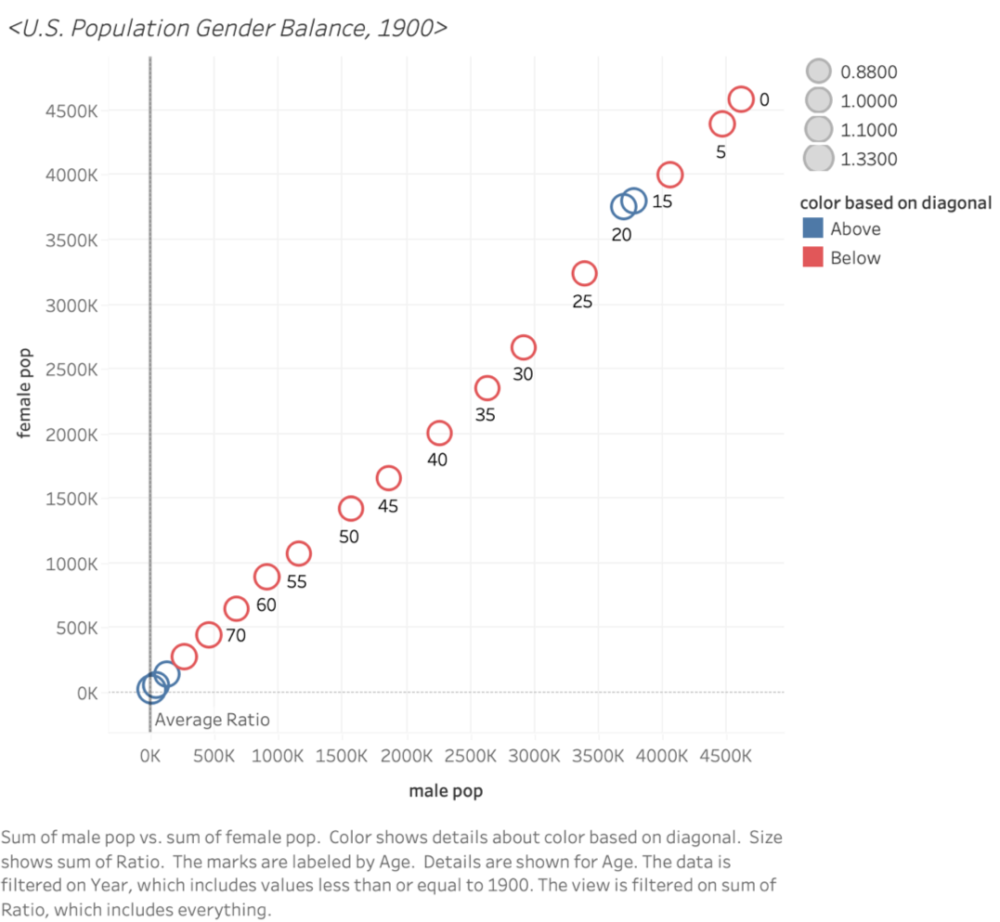
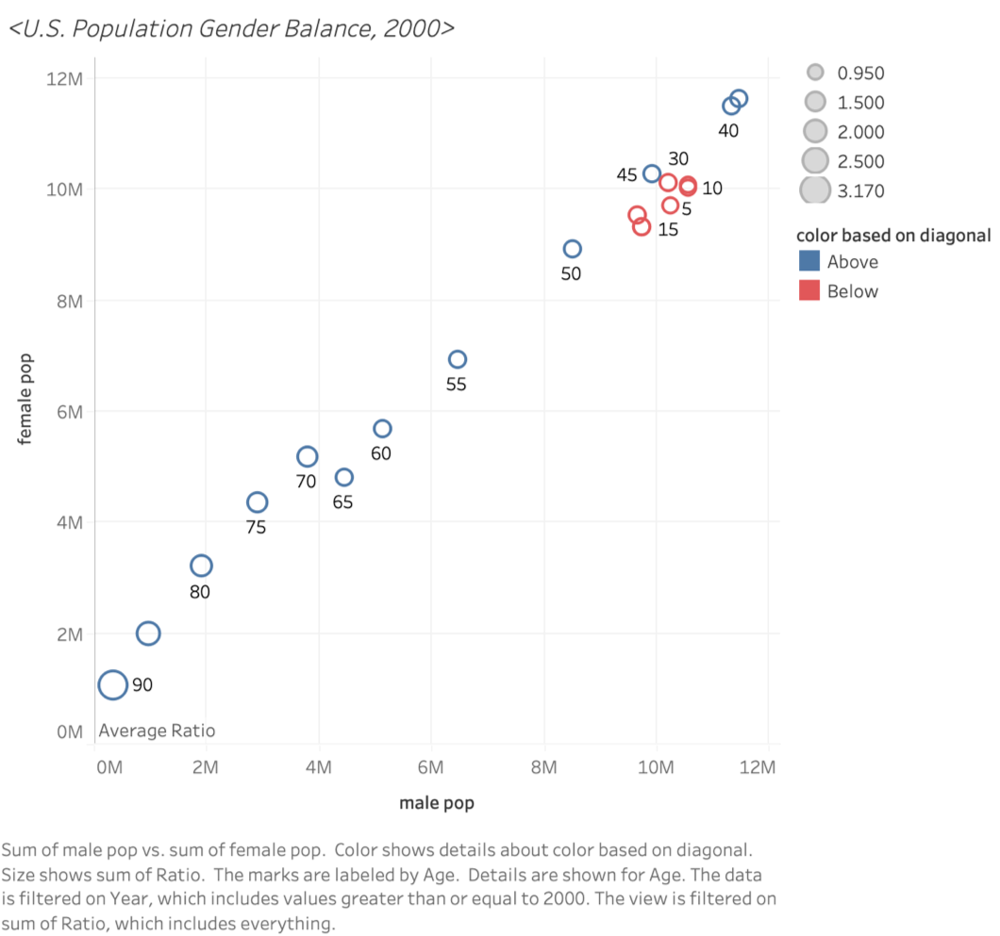

U.S. Population Gender & Age Balance in 1900 and 2000
Design Rationale for Sketch 1:
The selection of a line chart format can better represent changes, here manifested as the differences in population distribution across different age groups;
Using gender as the grouping condition, the relationship between male and female lines can be used to determine the comparison of gender numbers (for instance, whether the number of males always exceeds that of females; or if the comparison of male to female numbers fluctuates over time—and differentiated by color) and to some extent visualize the gap (distance between points);
Two sets of lines (a total of 4 lines) can also facilitate the comparison of numbers between 2019 and 2020.
U.S. Population Gender & Age Balance in 1900 and 2000
Design Rationale for Sketch 2:
The selection of a histogram format can reflect the population number through the area;
The selection of a population pyramid format can better represent the distribution of population numbers at both different gender and different age stages;
Four quadrants can add dimensions to the analysis—this chart includes a comparison of male & female, a comparison of population quantities across different age groups, and a comparison of data from 1900 and 2000.
U.S. Population Gender Balance in 1900 and 2000
Design Rationale for Sketch 3:
Attempted to simplify the information, only aiming to express the comparison of gender distribution;
Redefinition of the coordinate axes, with the number of females and males used as the x and y axes respectively, allows for a clearer representation of gender distribution through the spread of data points (and distinguishes gender by color contrast);
A 45-degree line of equality is used to assess the overall situation of gender quantity comparison (if a point lies above this line, it indicates that the number of females is greater than the number of males).
Reflection
Reflection for the first figure: Line charts can better differentiate gender opposition, thus addressing the question:"U.S. Population gender balance in 1900 and 2000", but they lack a representation of the total number of people.
Reflection for the second figure:When working on the first two sketches, I felt a little bit constrained and distracted for the reasons as below: 1. the desire to express comparisons across multiple dimensions (even when the focus is on the dichotomy of gender, I always want to add additional information, such as comparisons between different age groups, or between 1900 and 2000, etc.), which may lead to the information conveyed by the chart being not as clear and direct; 2. the feeling that I'm always stuck in the mindset of axes (is it possible to redefine the x/y-axis? Or is there even no need for axes?).
Reflection for the third figure:I have not yet broken free from the conventional mindset of relying on coordinate axes...
Summary:When there is an abundance of information, it becomes particularly important to clarify the research objective (question) and to filter out extraneous information. My question is not overly specific; rather, I am simply interested in examining the population distribution implications of the 'sex' variable. Hence, although all three charts reflect information on gender distribution(gender balance), they also incorporate additional information for support. In terms of thematic expression, I find the third figure to be more definitive and concise, using a scatter plot distribution to demonstrate the relationship between the number of males and females (while filtering out unnecessary variables such as time, total population, age distribution, etc.)—though this may also be one of its drawbacks, as the content expressed is too singular. If I will make the forth hand-drawing figure, my next step will be to explore whether I am overly reliant on the existence of coordinate axes in the process of data analysis visualization, thereby limiting the forms of expression?
Phase Two: Final Design

U.S. Population Gender Balance, 1900

U.S. Population Gender Balance, 2000
Design Process & Design Decisions
DESCRIBE YOUR DESIGN PROCESS AND DECISION DECISIONS HERE.